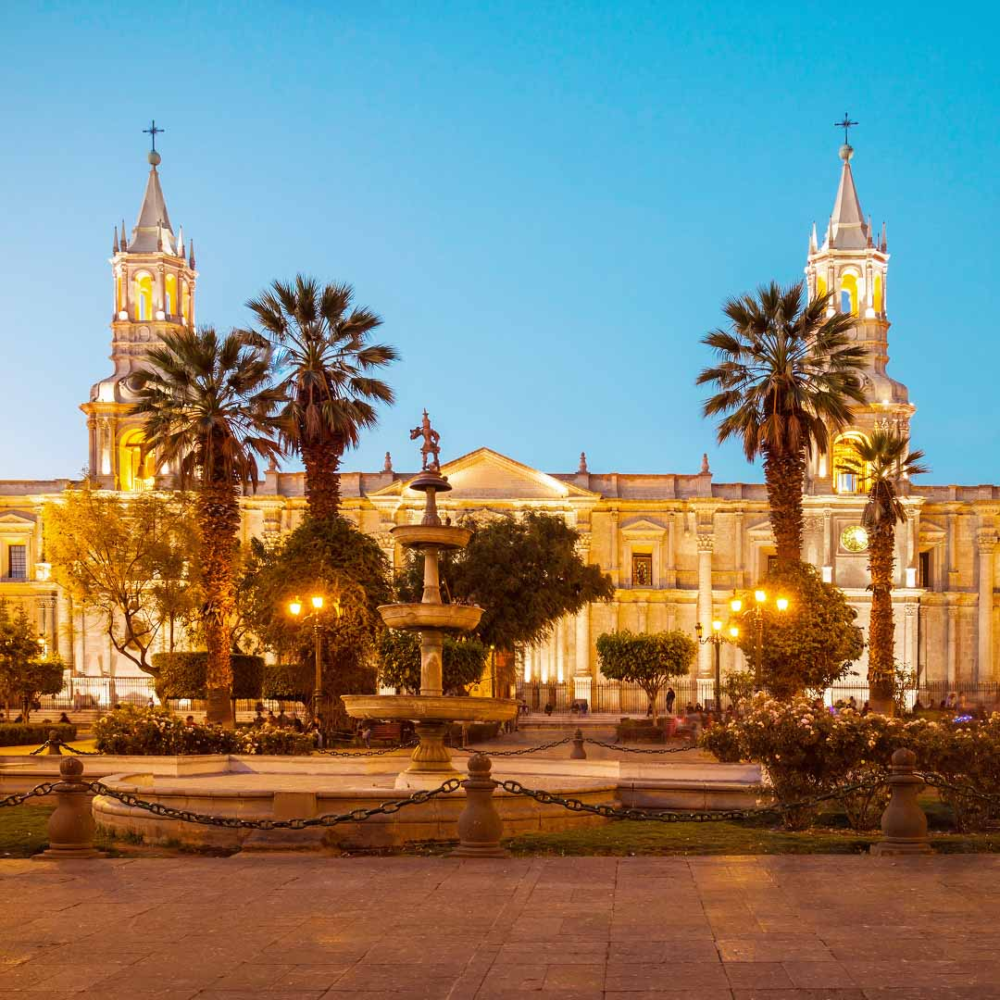
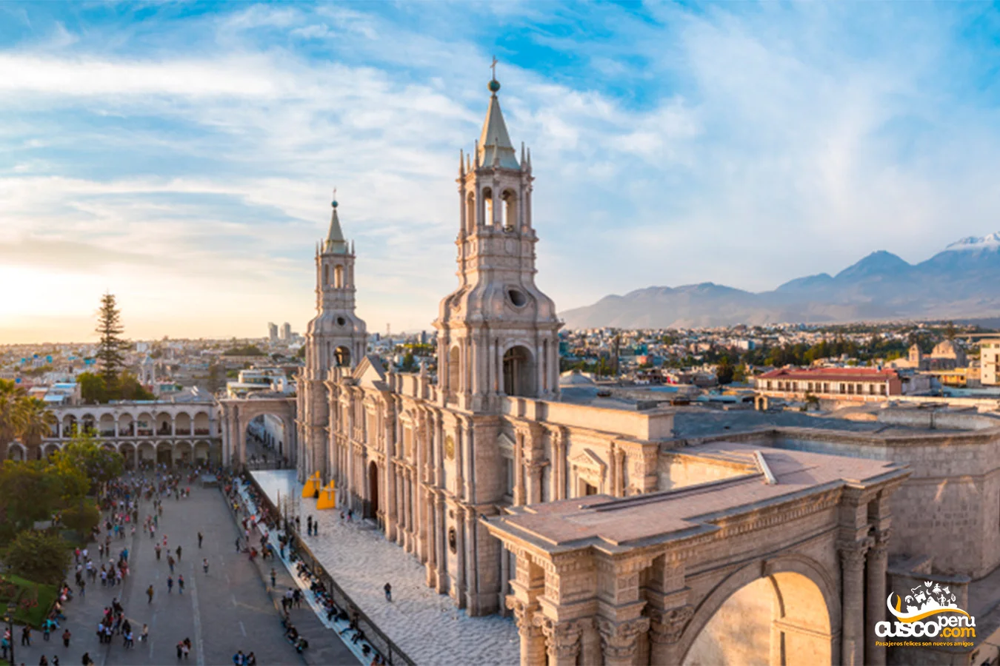
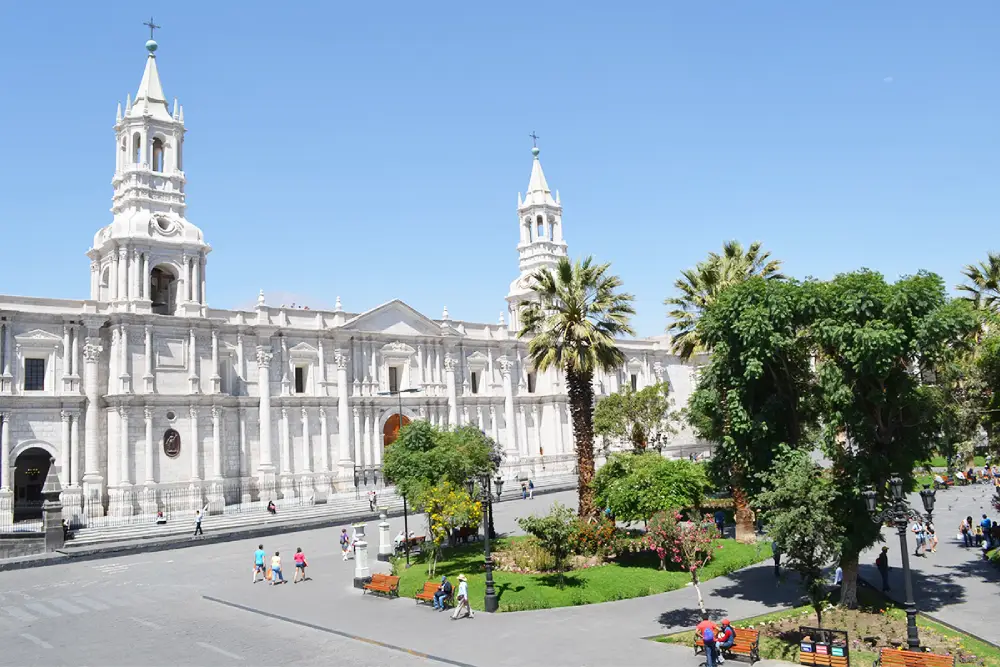
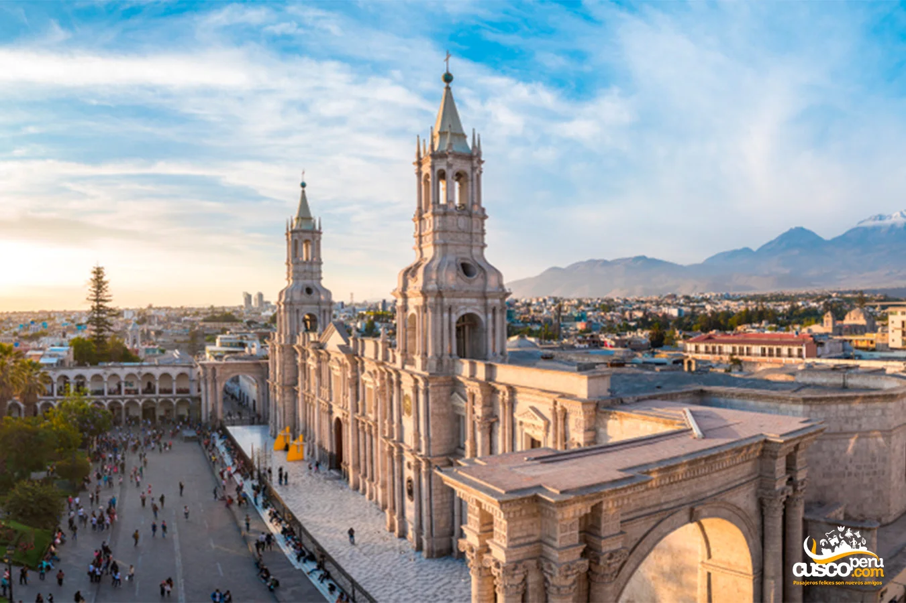
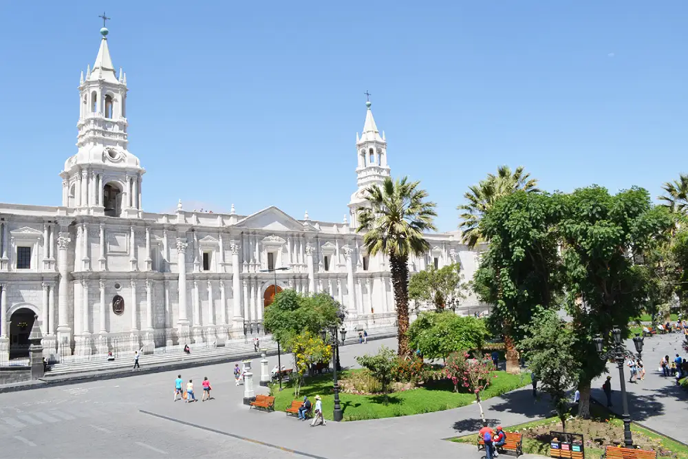
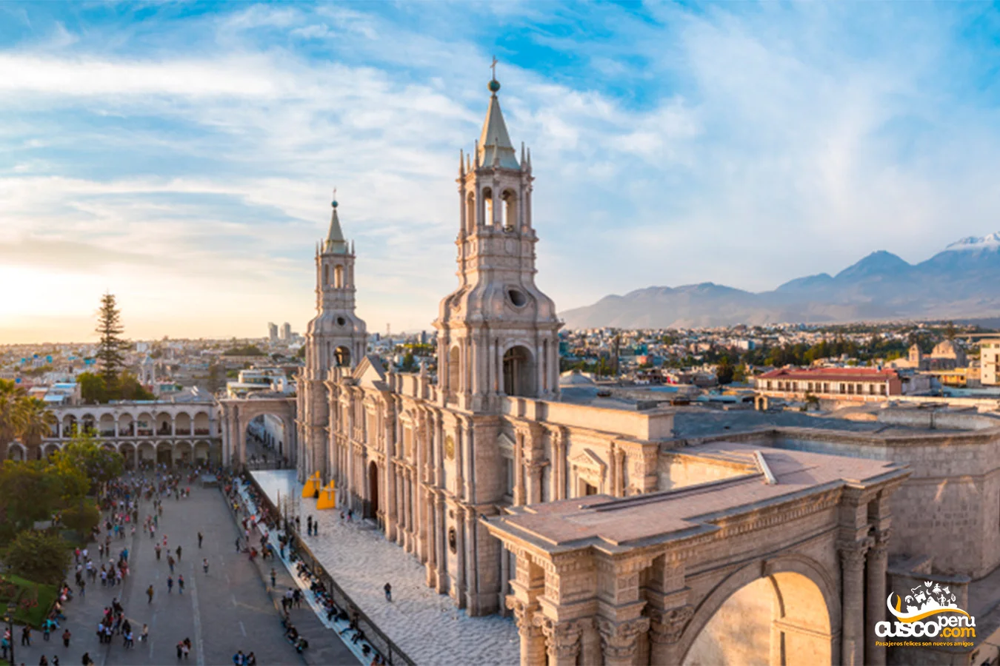
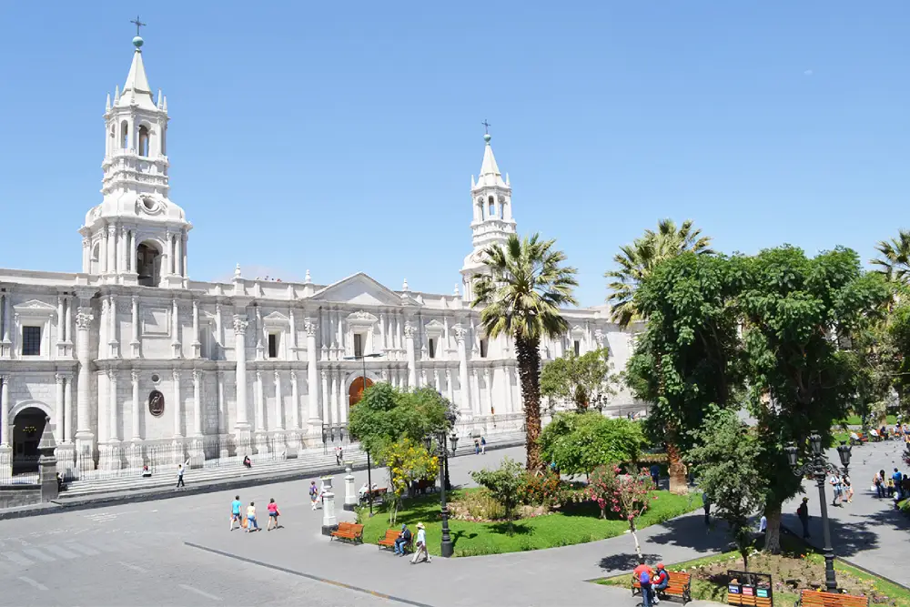

Plaza de Armas de Arequipa: El corazón histórico de la ciudad blanca
La Plaza de Armas de Arequipa es el centro neurálgico de la ciudad y uno de los espacios más emblemáticos del Perú. Rodeada de arquitectura colonial y con una vista impresionante del volcán Misti, es un lugar ideal para disfrutar de la historia, la cultura y la gastronomía local.
Historia
La Plaza de Armas de Arequipa fue diseñada en el siglo XVI por los colonizadores españoles y ha sido testigo de importantes eventos históricos. Está rodeada de edificaciones coloniales construidas con sillar, como la Catedral Basílica de Arequipa y los Portales de la Plaza.

 





Horarios y Ubicación
- Ubicación: Plaza de Armas, Arequipa, Perú.
- Horarios de visita: Acceso libre las 24 horas.
- Costo de entrada: Entrada gratuita.
Consejos para Visitantes
- Lleva protector solar y sombrero: Arequipa tiene un clima soleado la mayor parte del año.
- Visita los alrededores: Explora la Catedral, los Portales y disfruta de un café en los balcones con vista a la plaza.
- Disfruta la gastronomía: Prueba platos típicos como el rocoto relleno y el adobo arequipeño en los restaurantes cercanos.
- Fotografía el atardecer: La iluminación natural realza la belleza de la plaza y sus alrededores.
- Respeta el patrimonio: Mantén la limpieza y cuida las estructuras históricas.